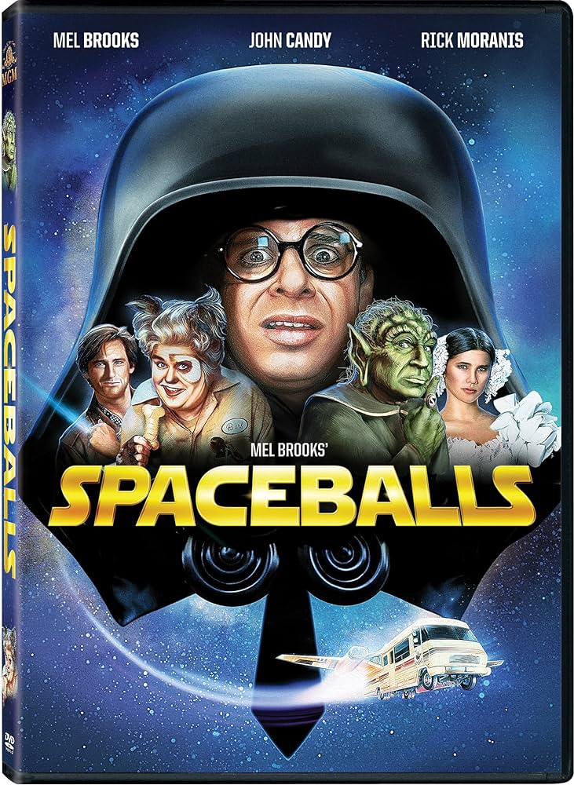
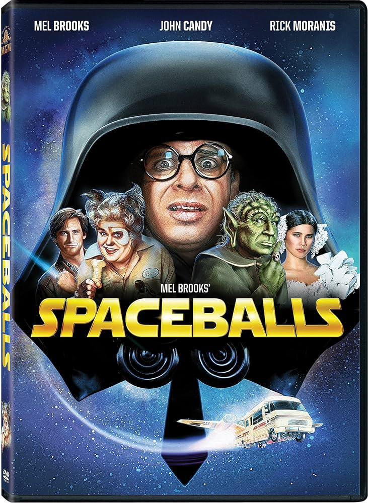

Anna Waltz
This is all about me
This is all about me
Currently I am attending college at Kent State studying computer science
with data engineering concentration. I also attend as many of the Kent State's student computer science club's meetings as my schedule allows.
In addition to being a full time student I do currently work part time, for more information check out my
employment history!
I went to Lake High school and graduated in 2023.
While there I participated in the marching band which I loved because the people who ran it were amazing and so kind.
I was in the percussion section through marching and concert band, but played snare specfically during the marching season.
I was also a member of the women's soccer team and the STEM club. Additional highschool was were I began to love computers, technology, and math.
I have two main hobbies with is reading and doing my nails.
I find both relaxing and meditative, and doing my nails is a great creative outlet where I can express myself.
I get most of my inspiration from Instagram and Pinterest.
I also love reading and I primarily read online as it is generally less waste and a bit more inexpensive than physical copies.
Most of my reads are fanasty and adventure.
Theses are some of my favorite pieces of media. Most of them are things I would recommend
or are a little more obscure that speak of my interests.


 
